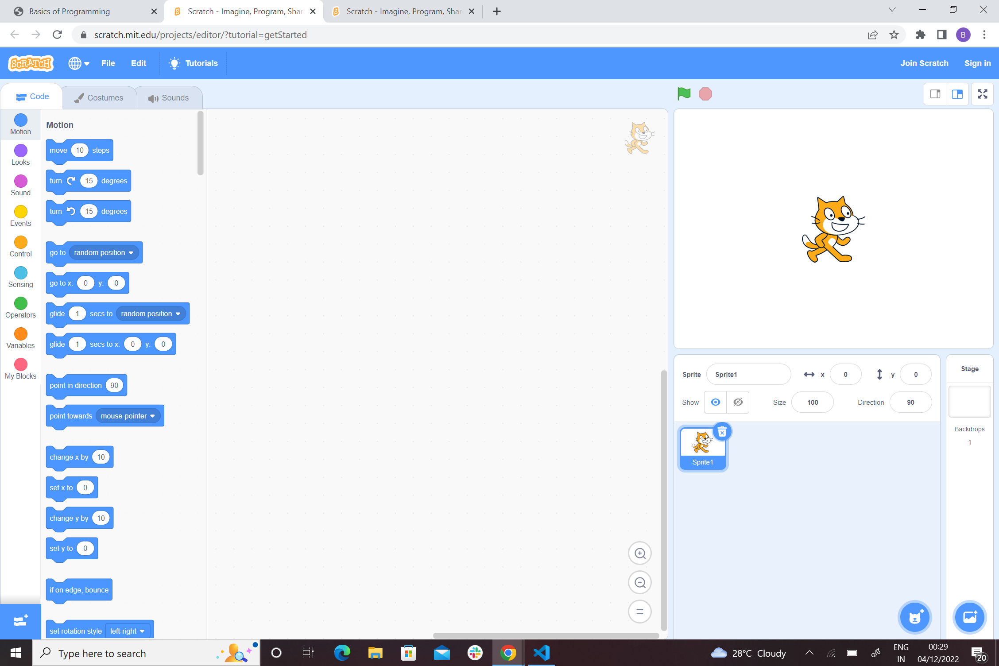
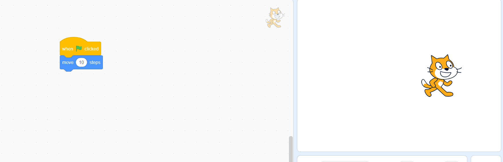
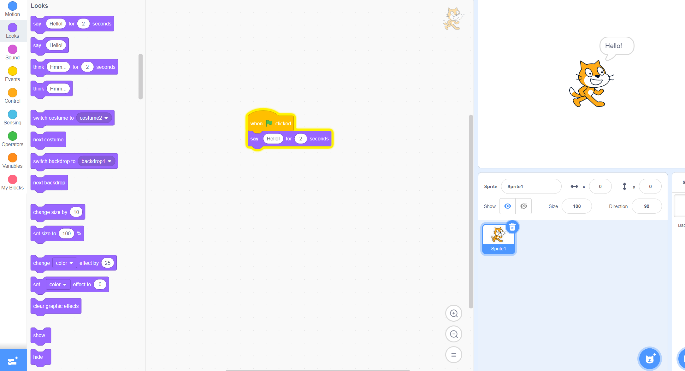
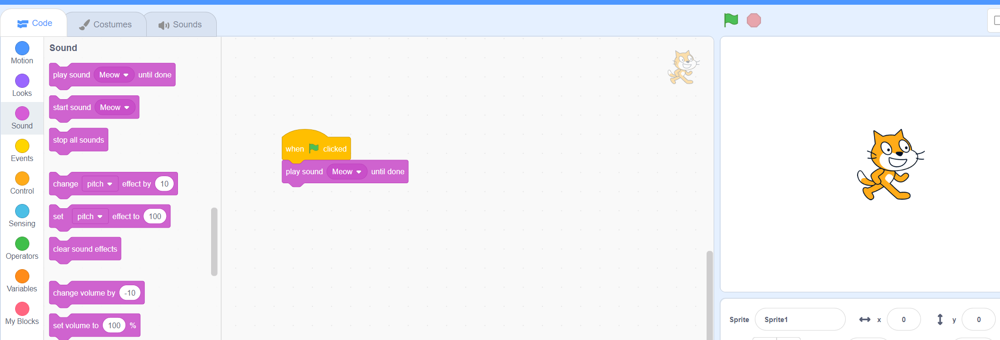
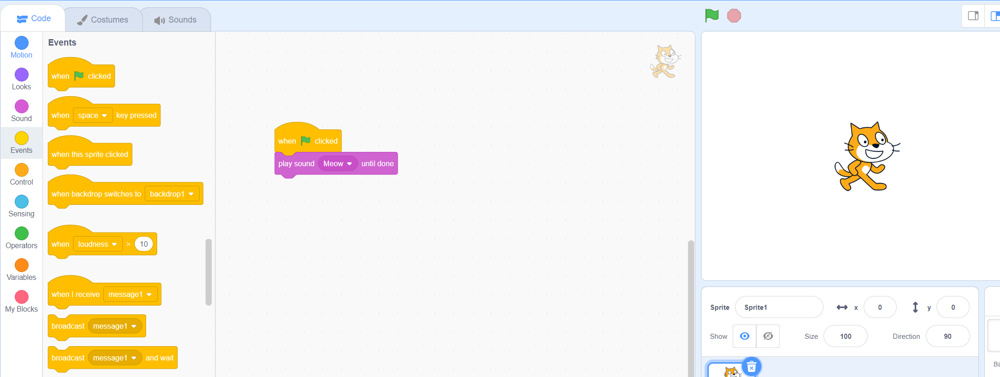
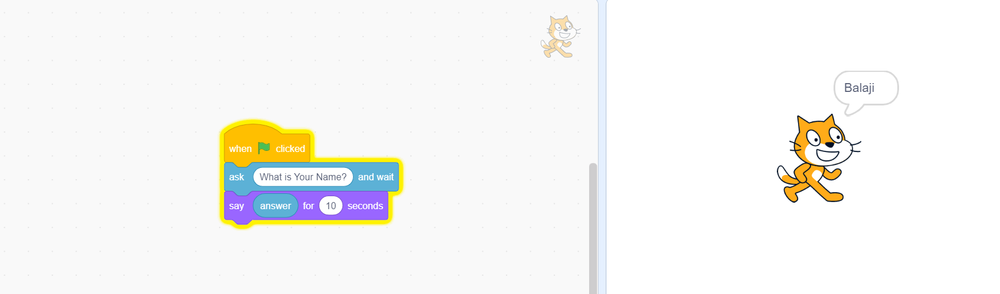
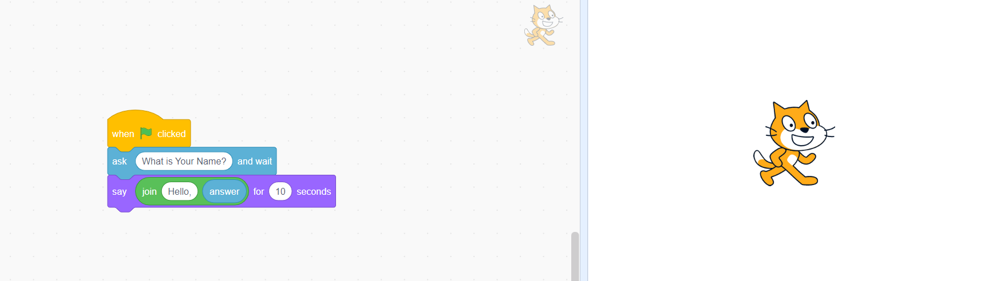
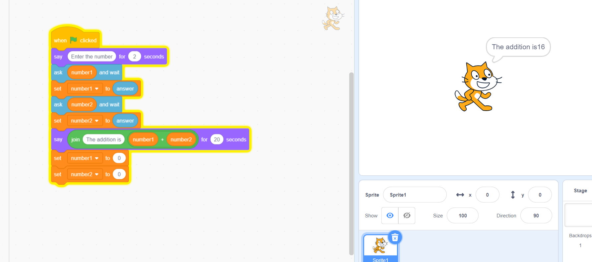
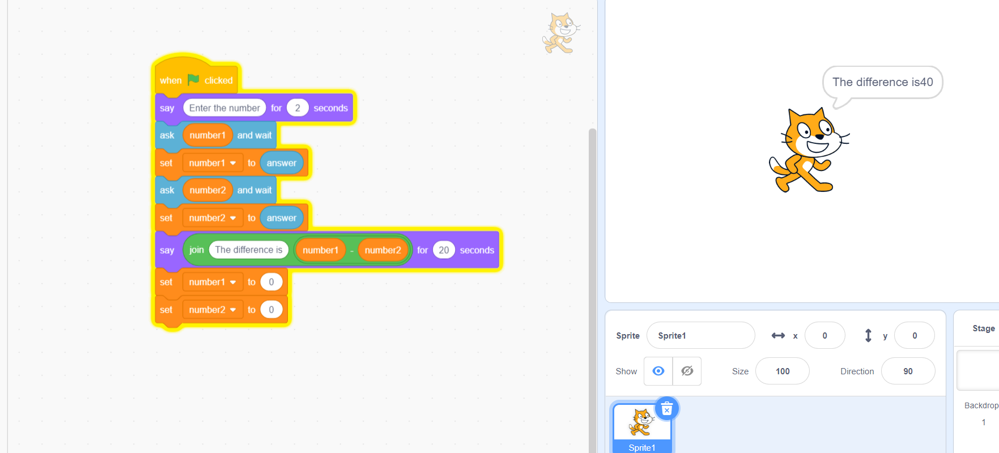
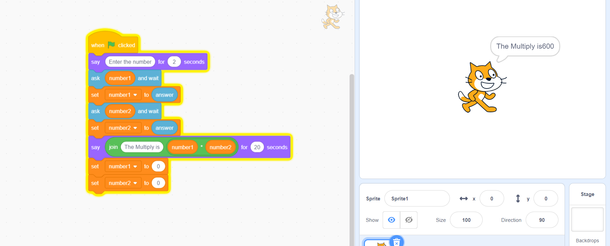

What is Programming?
Programming is nothing but teaching Computer to do something.
If we have not been taught to do a specific task with some conditions so far, then you have to say in a way that computer understands.(It understand only 1's and 0's).
That's where Programming language comes into picture.
Let's take an real time example: If you see a car moving then you can imagine that the wheels have provided an incrementing loop(repeating the same thing) and break will be the condition to stop the car.
Basically, Programming is used to make our work easier.
Why Programming?
Nowadays , Programming is everywhere.
- Calculator
- Washing machine
- ATM
- Car
- Bike
Without Programming, you won't read this article :) or even a simple text editor to begin with.
Let's start from scratch.
Yes!!.You heard it right ?.Let's begin with scratch.Check this(It is a best way to learn programming with help of anime)
We are not going to use any Programming language here. But We are going to help you to build a strong foundation on your logical thinking.
Main Page
In this entire article,We are going to play with a cat.
You can just play around with it.
Check the Options which is available on the left side
1.Motion
"When green flag clicked" should be used in your all programs.You can get it from "Events" tab.
This option help us to give command to perform action on the cat like move,turn and so on.
Note:Please try it by yourself.
2.Looks
In this option, you can make cat to say something,think,costume change and so on.
Note:Please try it by yourself.
3.Sound
In this option, you can make cat to make sound.
Note:Please try it by yourself.
4.Events
In this option, you can make cat to perform action when you clicked the "green flag" or pressed space.
Note:Please try it by yourself.
5.Control
In this option, you can make cat to perform action with specified cindition or in a loop.
We will discuss about this deeply later.
6.Sensing
Not required
7.Operators
In this option, you can make cat to perform mathematical operation or string(text) operation.
We will discuss about this deeply later.
8.Variables
In this option, you can make cat to store the data for future data.
We will discuss about this deeply later .
Lets's start to program
1.First Program
Task-1:Make your cat to get and say your name for 3 seconds.
Hope you tried it!!.
Solution:
Step 1:Drag & drop "when green clicked" from events tab.
Step 2:Get name from the user.
Step 3:Store it in a default variable called answer.And say it for 3 seconds.
These steps are called algorithms. So, Basically the algorithms is a set of procedures that follows to acheive the action.
Another method:
In actual programming , The join operator is called concat(Which helps to join (or) merge the strings).
Task-2:Make a program to add two numbers by your cat.
Hope you tried it!!.
Solution:
Step 1:Drag & drop "when green clicked" from events tab.
Step 2:Create a variables to store number1 and number2
Step 3:Get two numbers from the user
Step 4:Store it in a default variable called answer.And say the sum of the numbers.
click "make a variable" tab to create a new variable.
Here, You may wonder why I used Set function(set is actually used to assign the value for a variable, I set the number1=answer(what we got from the user)).
And at the last block , I mentioned set number1 and number2 as '0' because I want to make it as '0' once i got the sum of numbers.So that, the number cannot overlap from the previous inputs.
Note:Please try it by yourself
Task-3:Make a program to substract,multiply and divide two numbers by your cat.
Hope you tried it!!.
Solution:
Step 1:Drag & drop "when green clicked" from events tab.
Step 2:Create a variables to store number1 and number2
Step 3:Get two numbers from the user
Step 4:Store it in a default variable called answer.And say the subtract,multiply and division of the numbers.
Subtract:
Multiply:
Division:

Note:Please try it by yourself
Task-4:Let's imagine your teacher is asking you to write the program to know the grade of the students with the help of total marks out of 500.
We are going to use 'If conditions' and loop here. Because Every student secured different marks .So, grades also vary according to their mark.
'Loop' is to calculate every student grades frequently without the break.So that, We can calculate it within the short period of time.
Conditions:
*If a student scored more than 450 , then he/she should get 'A' grade
*If a student scored between 350 to 450 , then he/she should get 'B' grade
*If a student scored between 300 to 350 , then he/she should get 'C' grade
*For other scores you have to say 'arrear'.
Real time examples:
If it is raining outside, then don't have to water to plants by yourself.
So,you can tell :if it is raining,I shall not water the plants,else I have to water them.
You can write the pseudo code as below: Pseudo code--->Pseudo code, as the name suggests, is a false code or a representation of code which can be understood by even a normal man with some school level programming knowledge.
if (raining==true)
do not water
else
do water
Solution:
Step 1:Drag & drop "when green clicked" from events tab.
Step 2:Create a variables to store total marks of student
Step 3:Get marks from the user
Step 4:Store it in a default variable called answer.And say the grade of the student.
I used '%' modulus operator here,It will give the remainder of two numbers(i.e:4/2=remainder is 0;5/2=remainder is 1)
Note:Computer can do operation only by using (+ , - , * , / and %)
Note:Please try it by yourself
Task-5:Let's write a Calculator Program
Step 1:Drag & drop "when green clicked" from events tab.
Step 2:Create a variables to store two numbers and operator
Step 3:Get numbers and operator from the user
Step 4:Store it in a default variable called answer.And say the calculation of the numbers.
Note:Please try it by yourself
Hope you all learnt something new and tried to improve your logical thinking.
Final Task : Please try to write a program for ATM machine
I won't give solution for this task !!.Please try it by yourself.
Thanks for reading this article...
We will dive deep into programming on next module!!!.